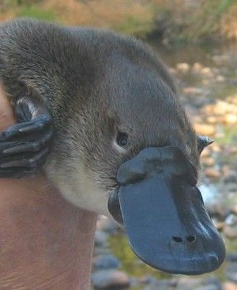
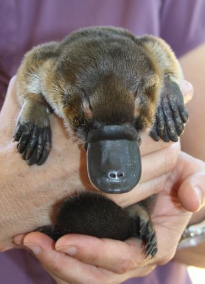
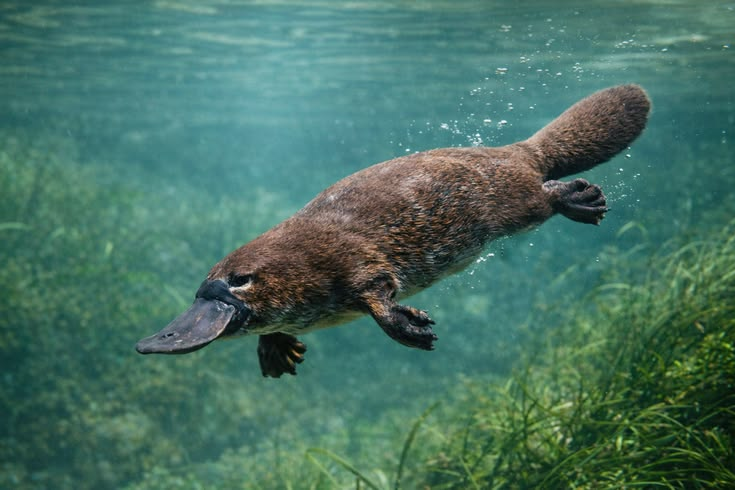

RECUPERAÇÃO
Reintrodução com reprodução registrada
Em 2024, pesquisadores encontraram um jovem ornitorrinco no Royal National Park após a devolução de dez animais ao local.
Ler fonte oficial →INICIATIVAS E REALIZAÇÕES
Projetos de pesquisa, monitoramento e recuperação de habitat ajudam a ampliar o conhecimento e a proteção do ornitorrinco.

RECUPERAÇÃO
Em 2024, pesquisadores encontraram um jovem ornitorrinco no Royal National Park após a devolução de dez animais ao local.
Ler fonte oficial →
PESQUISA
Um projeto de cinco anos monitora populações em rios do norte da bacia para entender sua condição e saúde.
Ler fonte oficial →
HABITAT
A iniciativa Platy Patch busca melhorar margens de córregos e habitats aquáticos essenciais para ornitorrincos e espécies ameaçadas.
Ler fonte oficial →
INFORMAÇÃO
Perda de habitat, barragens, predadores e resíduos de pesca estão entre as principais pressões registradas para a espécie.
Ler fonte oficial →